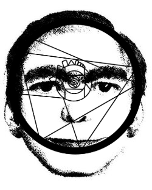

This Man
Introduction
This Man or often called The Dream Man is a widely known internet hoax that is centered around the idea that a numerous amount of people from all over the world have seen a man with a blank face even though nobody who has seen him, identified a person in real life like him. First created as a website made by Andrea Natella in 2008 named, "Ever Dream This Man?", it showed the Dream Man's face and described the mysterious individual as to appear in peoples dreams...

Caption:
Every night, all over the world, hundreds of people see this face in their dreams. If this man appears in your dreams too, or if you have any information that can help us identify him, please contact us.
History
The history behind This Man started on 2006 when a patient of a well-known psychiatrist sketched the face of a man that has been repeatively appearing in her dreams when she states that she hasn't met the man in her life. A few days later, another patient recognized the face. Ever since, more and more people saw This Man in their dreams frequently.
In 2008, Andrea Natella, an Italian sociologist, help launch the media campaign, "Ever Dream This Man?" as hundreds of flyers across the US have directed people towards the website www.thisman.org.
Since Janurary 2006, the debut of the site, it claimed that from that time 2,000 people from across the world claimed to have seen This Man in their dreams.
The site quickly started gaining attention and popularity in 2008 - 2009, only after October of that year had the amount of views of the site exponentially increased. Over two million visits and over 10,000 emails from people sharing experiences with This Man and sending photos of people who resembled This Man. This Man was the first of Natellas work that got international recognition.
However after the explosion in popularity, users on forums like 4chans and blogs became suspicious about the legitimacy of the newly widespread phenomenon as it was believed to be a guerrilla marketing stunt. In late 2009, the views on This Man had divided into two, one claimed that it was a hoax altogether and the other believing that it was real and ongoing.
In 2010, Natella soon made a post on the website of KOOK Artgency, an art agency company that he founded, where he confirmed that This Man was invented as a publicity stunt or marketing that was expected to attract and gain attention from the public. He also admitted that the whole story about This Man was fabricated and the original sketch was based on a photo of his father when he was young. Natella also stated that his inspiration was from the concept of dream invasion, and the power of the internet to create and spread urban legends and collective myths, which the internet had done before. Still after confirmation that This Man was a hoax, serious investigations of it continued in the mid-2010s, and now is used in films, analog horrors, and in arts.
Theories
During the intial popularity of This Man, many theories arose on who the man could be. One theory stated that This Man is the manifestation of god, or the image of the Creator. Another theory was that This Man is an archetypal image that people see in times of hardships like during emotional development or stressful circumstances. Dream Surfer Theory, the most interesting theory was that This Man is an actual person who can enter peoples dreams by means of specific psychological skills. Some believe that This Man looks like the man in the dreams while other believe that This Man bears no resemblence from his real life counterpart. The Dream Imitation theory is another one that claims that This Man had developed and grown due to imitation, since it's lasting impact on people who view it causes them to see This Man in their dreams. And the Daytime Recognition Theory, states that This Man is a result of how we can't remember precisely the faces we see during dreams.
